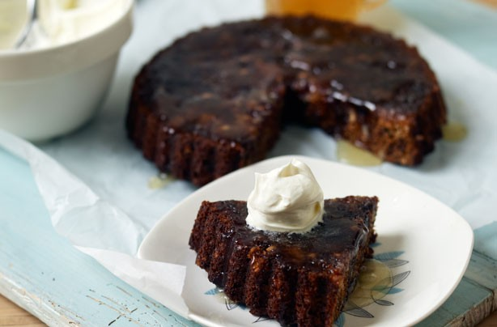
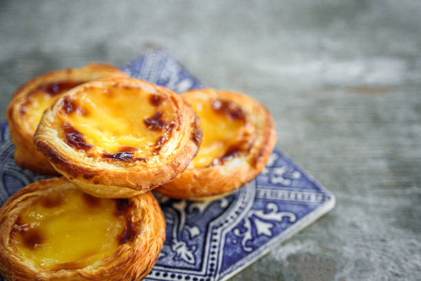

An image for the homepage
An image for the homepageAs they have just moved to a new more central location, they want to improve their online webpage and attract young people. They are also wanting to increase the number of sign ups for their weekly specials.
This is a small-run local business and have the goal to improve their business scope by getting actively online. With the new location next to Willows shopping centre, they are aiming that the internet will assist in attracting customer to the shop as well as customers checking the website.
Increase in sales in general, increase in online traffic and increase in the number of people signing up for the weekly specials.
To attract young families and young people, possibly around the age of 17 - 35.
Navigation bar must be horizontal and links should be repeated in the footer.
Home page will need to include navigation bar, 2 customer reviews, contact us and image. There will be separate pages for "about us", specials, menu image gallery and 6 products pages.
Specials will include 3-4 items with 25% discount in store only. At the bottom of the special page, sign up box will be available.
Contact us details will be at the footer with anchor link from the navigation bar.
Join us in the navigation bar will be anchor link to the specials.html
Menu will lead to a separate image gallery where the images will be linked to further 6 product pages.
An image for the homepage
Menu image gallery
Separate menu page
 Menu image gallery and separate menu page
Menu image gallery and separate menu page
Menu image gallery and separate menu page
Menu image gallery and specials page
Separate menu page
 Menu image gallery and separate menu page
Menu image gallery and separate menu page
 Menu image gallery and separate menu page
Menu image gallery and separate menu page
The fonts used are "Monaco" and "Apple Chancery"
Possible colour scheme but may change during development.
Current plan for timeline. Note that it may change as I progress.
Domain name: $100
Labour cost: $40 per hour
The feedback from Assignment 1 in LearnJCU is "Well Done" and thank you for that. For Assignment 2, there will be additions and updated plans.
Kindly note that this plan.html will change accordingly as this development progresses.
Should you wish to see the original flowchart, please refer to the flowchart part for Assignment 1 at the top of plan.html.
New flowchart plan to add the new pages. Note that it may change as I progress.
Current plan. Note that it may change as I progress.
Current plan. Note that it may change as I progress.
Current plan. Note that it may change as I progress.
Should you wish to see the original timeline, please refer to the timeline part for Assignment 1 above.
Current plan for timeline. Note that it may change as I progress.
Kindly note that the following is a tentative plan and may change at a later date.
The main aim for assignment 2 is to make the website live and this includes data collections for newsletter sign up. Ideally, the contact us form and newsletter sign up should work. By week 10, I will test the functions of these 2 pages and see if it create the database behind the background. We will also try the check out page to see if it works as it should be.